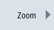
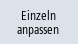
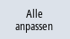
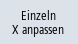
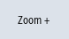

Mit der Zoom-Funktion haben Sie die Möglichkeit sich ausgewählte Kurvenabschnitte im Detail zu betrachten. Nachdem Sie einen Bereich oder einen Ausschnitt festlegt haben, können Sie ihn vergrößern bzw. verkleinern.
Vorgehensweise
 | 1. | Im Grafikfenster "Trace" ist eine Aufzeichnung geöffnet. |
|  | 2. | Drücken Sie den Softkey "Zoom", wenn Sie die Verlaufsgraphen vergrößert bzw. verkleinert darstellen möchten. |
| | 3. | Der Softkey "X-Zeitachse" bzw. "Y-Wertachse" ist angewählt. |
| | | |
|  oder  | 4. | Drücken Sie den Softkey "Anpassen einzeln" oder "Alle anpassen", wenn Sie im Grafikfenster alle angewählten Verlaufsgraphen, in einem eigenen Bereich und untereinander dargestellt, anzeigen möchten. |
| | | - ODER - |
| | | Drücken Sie den Softkey "Anpassen zusammen", wenn Sie alle Verlaufsgraphen an das Grafikfenster anpassen möchten.
Da nun alle Kurven den gesamten Fensterbereich ausfüllen, erscheinen sie überlagert. |
| | | - ODER - |
|  | | Drücken Sie den Softkey "X anpassen einzeln", wenn Sie nur die X-Zeitachse auf das Grafikfenster normieren möchten. |
| | | - ODER - |
| oder | | Drücken Sie den Softkey "Y anpassen einzeln" oder "Alle anpassen", wenn Sie nur die Y-Wertachse auf das Grafikfenster normieren möchten. |
| | | - ODER - |
| | | Drücken Sie den Softkey "Y anpassen zusammen", wenn Sie die Wertachse alle Verlaufsgraphen an das Grafikfenster anpassen möchten.
Da alle Kurven den gesamten Fensterbereich ausfüllen, erscheinen sie überlagert. |
|  | 5. | Drücken Sie den Softkey "Zoom +" bzw. "Zoom -" so oft, bis die gewünschte Darstellungsgröße erreicht ist. |
Bereich vergrößern/ verkleinern |
| | | Drücken Sie den Softkey "Zoom Bereich", um einen bestimmten Ausschnitt zu definieren. Ein Rahmen wird eingeblendet. |
| | | Drücken Sie die Softkeys "Zoom +" bzw. "Zoom -", um den Rahmen schrittweise zu verändern. |
 | | Drücken Sie den Softkey "OK", um den Zoombereich zu anzuzeigen. |